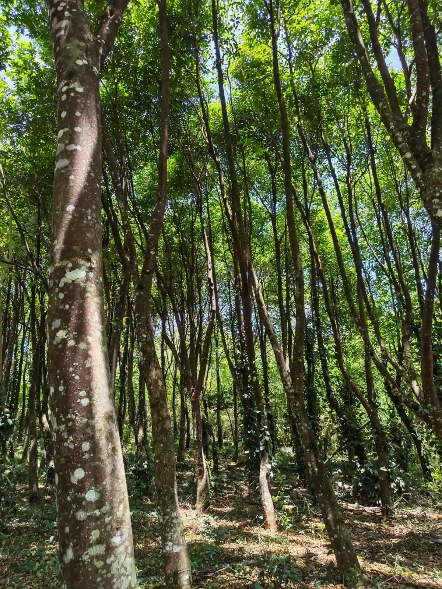

Agarwood quality is determined primarily by resin density (measured by specific gravity and water-sinking capacity), aromatic depth upon gentle heating, cleanliness of manual carving (absence of non-resinous white wood), and botanical maturity. While commercial trade labels such as "Triple Super" or "Grade A" vary by region, true quality is rooted in physical resin saturation rather than superficial darkness alone.
When entering the world of agarwood, few aspects generate more confusion than grading terminology. A search across international retailers yields a dizzying array of designations: "Double Super," "Grade AAAA," "King Grade," "Wild Sinking Grade," or "Imperial Reserve."
To evaluate agarwood like an experienced connoisseur, one must look past subjective commercial marketing labels and understand the objective physical, olfactory, and structural criteria that truly define high-grade material.
The Truth About Universal Grading Systems
There is no single, internationally standardized regulatory body that assigns official grades to agarwood in the manner that the Gemological Institute of America (GIA) grades diamonds or the USDA grades organic food.
Instead, grading systems evolved independently across different regional trading centers:
- The East Asian Tradition (Japan, China, Taiwan): Focuses intensely on density and water displacement. Wood is classified as Sinking (Chen Xiang / Jinkoh), Half-Sinking, or Floating. The revered Japanese Koh-do tradition further categorizes wood by olfactory profile (the Six Koku: Kyara, Rakoku, Manaban, Manaka, Sasora, and Sumotara).
- The Gulf & Middle Eastern Tradition: Focuses on incense burning behavior, sweetness of smoke, and resin bubbling. Grades are historically termed Super, Double Super, and Triple Super to indicate increasing resin concentration and aesthetic visual presentation.
- Southeast Asian Producer Markets: Producers in Malaysia, Indonesia, Vietnam, and Thailand often use alphanumeric codes (e.g., Grade A, Grade B, Grade C, or CK1 to CK4) reflecting the percentage of resin coverage across carved chips.
Because these terms are self-applied by sellers, a "Triple Super" from one vendor may possess lower resin density than a "Grade A" from a more rigorous producer.

The 5 Core Pillars of Agarwood Quality
Seasoned appraisers evaluate raw agarwood across five objective benchmarks:
1. Resin Density & Specific Gravity (Sinking Capacity)
Normal uninfected Aquilaria timber is lightweight and floats readily on water. As oleoresin accumulates inside xylem cells, the wood's density increases. When resin saturation exceeds approximately 50% to 60% of total volume, the wood's specific gravity surpasses that of water (1.0 g/cm³), causing it to sink completely.
| Density Classification | Behavior in Water | Estimated Resin Saturation | Relative Commercial Value |
|---|---|---|---|
| True Sinking Grade | Plummets immediately to the bottom of the vessel | 60% – 85%+ resin content | Highest tier; collector & master incense grade |
| Half-Sinking (Suspended) | Floats mid-depth or balances vertically with one tip submerged | 35% – 55% resin content | High artisanal grade; exceptional incense wood |
| Floating Grade | Floats securely on the water surface | 15% – 30% resin content | Commercial incense chips; excellent daily distillation stock |
2. Olfactory Performance (The Heated Burn Test)
Density alone does not guarantee a magnificent scent profile. True quality is revealed when a tiny sliver is placed on an electric mica heater (at 120°C to 160°C) or over ash-covered charcoal:
- Resin Bubbling: High-grade wood visibly "sweats" and bubbles as boiling oleoresin liquefies on the surface.
- Scent Evolution: The fragrance should radiate complex layers—honeyed floral top-notes, warm balsamic heartwood, dry cedar, and deep resinous sweetness—without smelling like burnt paper or acrid smoke.
- Persistence: The room note should remain pure and tranquil long after the heat source has cooled.
3. Thoroughness of Cleaning (White Wood Removal)
As detailed in our guide on how agarwood is harvested and processed, any remaining odorless "white wood" dilutes aromatic performance. A piece that has been carved with surgical precision to isolate pure resin veins is vastly superior to a piece of equal weight that contains 40% hidden inert timber.
4. Form Factor and Structural Integrity
Whether the wood exists as natural hollow shells (claws/tubes), flat incense shavings, or solid sculptural blocks impacts desirability. Sculptural pieces suitable for contemplative display command a premium over fragmented chips of equal resin density.
5. Botanical Maturity and Provenance
Trees that matured over 8 to 12 years prior to harvest develop broader resin channel networks and a richer spectrum of sesquiterpenoids compared to rapidly forced immature saplings.
The Myth: Why "Darker" Does Not Automatically Mean "Better"
A dangerous misconception among novice buyers is assuming that jet-black wood is always superior to brown or variegated wood:
In unregulated markets, low-grade white wood is frequently boiled in shoe polish, darkened with industrial dyes, injected with hot black wax, or coated with toxic chemical perfumes to mimic top-tier black sinking wood. Authentic natural resin often displays rich variegation—swirling shades of chocolate brown, reddish-amber, and charcoal grey rather than an unnatural, uniform matte black.
To learn how to protect yourself against artificial treatments, read our companion piece on how to identify genuine agarwood and oud.
Artisanal Pure Oud Collection
Explore single-estate reserve oils distilled exclusively from verified mature, high-resin Aquilaria trees.
Frequently Asked Questions About Agarwood Grading
No universal international standard exists. Different trading regions use their own grading conventions: East Asian markets rely on sinking density classifications (Sinking, Half-Sinking, Floating), while Middle Eastern markets often categorize by terms like Super, Double Super, Triple Super, and King. Buyers should prioritize physical resin density and scent quality over commercial label claims.
"Sinking grade" (often called submerged wood or Jinkoh) refers to pieces where resin saturation is so dense that the wood's specific gravity exceeds that of water (greater than 1.0 g/cm³), causing the piece to sink completely rather than float. Sinking pieces represent the pinnacle of density and market value.
Not necessarily. While high resin saturation often appears dark brown or black, artificial dyeing, chemical staining, and surface waxing are frequently used by unscrupulous sellers to make poor, light wood appear dark. True quality must be confirmed by density, tactile feel, microscopic resin vein examination, and gentle heated scent testing.
Because visual appearance can be cosmetically altered, but the complex aromatic profile released upon gentle heating cannot. Authentic high-grade agarwood produces clean, resinous bubbling and an evolving, multi-layered balsamic bouquet without harsh, acrid, or synthetic smoke.